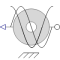

SinCosResolverSin-Cos-Resolver |

|
Information
This information is part of the Modelica Standard Library maintained by the Modelica Association.
Simple model of a sin-cos-resolver, i.e. sensing the angle of the flange phi (w.r.t. the optional support) and multiplied by p, providing 4 signals:
y[1] = offset + amplitude*cos(p*(phi - phi0))y[2] = offset - amplitude*cos(p*(phi - phi0))y[3] = offset + amplitude*sin(p*(phi - phi0))y[4] = offset - amplitude*sin(p*(phi - phi0))
Thus the sine and cosine signals have p periods per mechanical revolution.
Adding an offset > amplitude, the loss of one track can be determined.
Subtracting the negated signal from the signal, the offset is removed and a cosine and a sine with doubled amplitude are accessible.
From this signal, the angle within one pole pair of a machine can be determined for field oriented control.
Block SinCosEvaluation can be used.
This model can be used to export FMUs of drives to develop control strategies in other environments. When switching to a real drive, the same inputs as from the FMU can be used.
Note that phi0 has to be set that way, that in shaft position phi0 the flux linkage of phase 1 is a maximum.
In order to sense the mechanical angle of the shaft p = 1 has to be set.
Parameters (5)
| useSupport |
Value: false Type: Boolean Description: = true, if support flange enabled, otherwise implicitly grounded |
|---|---|
| p |
Value: Type: Integer Description: Number of pole pairs |
| amplitude |
Value: 1 Type: Real Description: Amplitude of signals |
| offset |
Value: 1.5 Type: Real Description: Offset of signals |
| phi0 |
Value: -pi / p Type: Angle (rad) Description: Initial mechanical angle |
Connectors (3)
| flange |
Type: Flange_b Description: Flange of shaft |
|
|---|---|---|
| support |
Type: Support Description: Support/housing of component |
|
| y |
Type: RealOutput[4] Description: Track signals |
Used in Examples (1)
|
Modelica.Electrical.Machines.Examples.SynchronousMachines Test example: PermanentMagnetSynchronousMachine fed by FOC |